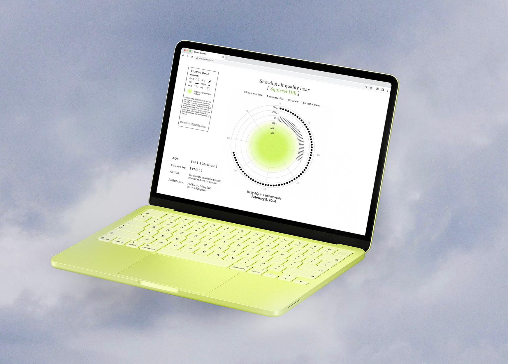
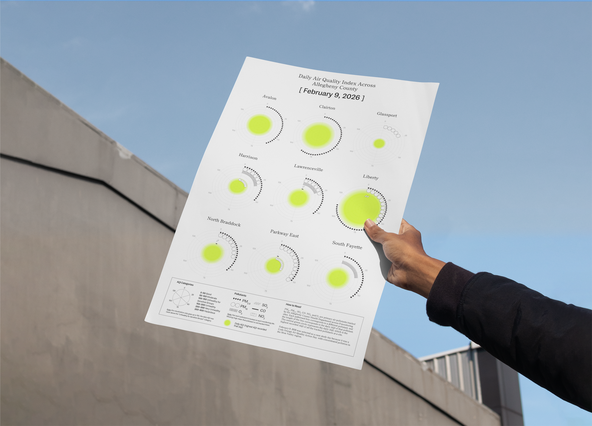

Investigating the history of air pollution and air quality monitoring in Pittsburgh, PA.
The Air We Share aims to educate Pittsburgh residents on the complex industrial and environmental history of the city they call home and bring to light that pollution issues aren’t over, especially in low income black communities near currently running mills. Through original data visualizations and maps of current and historical air quality data, the project also encourages citizens to stay up to date with air quality where they live and also get involved in activism to improve air quality around the city.
Local and national data explains the history of air quality monitoring in Allegheny County.
Data was collected from the Western Pennsylvania Regional Data Center (WPRDC) air quality hourly and daily data, Environmental Protection Agency (EPA) annual data, Allegheny County Health Department 2023 Annual Air Quality Report, Smell Pittsburgh, 2026 ACHD Air Quality Monitoring Plan, and WPRDC 2020 census.
Data visualizations uncover air quality patterns by region.
AQI trackers typically don’t breakdown daily AQI by pollutant so these layer both individual pollutants at each site via patterns and the daily average at the site via the green gradient. Placing multiple monitors side by side also reveals the differences in the pollutants tracked at each site.

